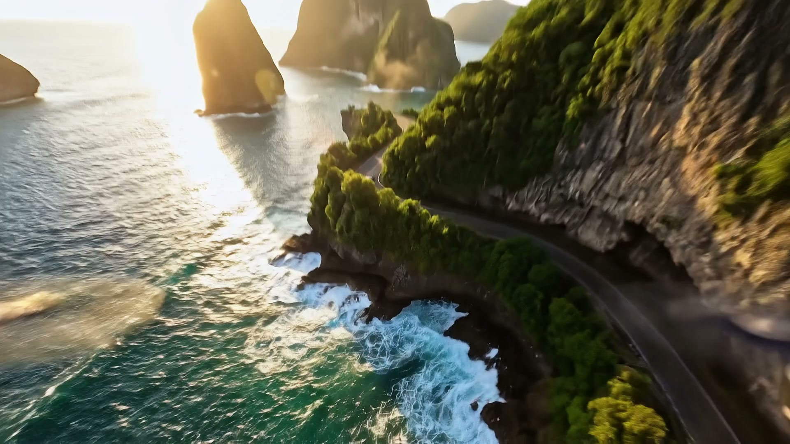

01 / Mar a bombordo
Horizontes Inexplorados
Rochedos no mar de um lado, basalto molhado do outro e uma única fita de asfalto entre eles. O drone atravessa a neblina e se posiciona atrás do Tideline, que costura a falésia.

Norvane NV-8 Tideline — conceito de design
Cento e quarenta metros acima das ondas, uma estrada corta a falésia. Em algum ponto dela, algo escuro se move. Role para descer.
01 / Mar a bombordo
Rochedos no mar de um lado, basalto molhado do outro e uma única fita de asfalto entre eles. O drone atravessa a neblina e se posiciona atrás do Tideline, que costura a falésia.
02 / Na curva, rumo ao sol
Sol baixo, um raio que se fecha, uma mureta e, depois dela, só água. A suspensão a ar preditiva lê a inclinação da pista uma curva à frente, e as quatro rodas esterçantes mantêm a trajetória tão precisa quanto o fotógrafo deseja.
03 / Mar aberto, estrada aberta
A estrada se alinha, as falésias recuam e a baía se abre em turquesa. Sem horário e sem destino na tela, só o próximo promontório.
04 / Ficha técnica · números do conceito
O carro no fim da estrada. Cada número abaixo é uma meta de projeto para um veículo que não existe.
Motor duplo, bateria de 112 kWh e vetorização de torque no eixo traseiro. Calibrado para subidas longas e para a descida de volta.
Um teto de vidro de ponta a ponta, dividido por uma única viga de carbono: o mesmo teto que o drone enxerga lá de cima durante quase todo o filme.
As venezianas da entrada de ar inferior se fecham acima de 70 km/h e a carroceria desce 40 mm, o que faz toda a diferença em estradas costeiras longas e retas.
Dados ilustrativos de conceito · não homologado · não é um veículo de produção